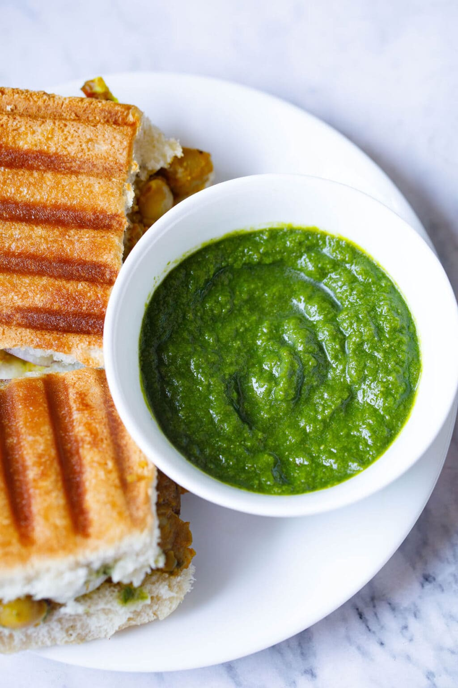

Cilantro Chutney - To serve with any snacks

Description - Quick, spicy and flavorful chutney to serve with snacks
This is a spicy and delicious cilantro chutney (sauce) that you can quickly serve with snacks. It's good for atleast a week in the refrigerator so don't worry about cooking it often.
Ingredients
- Coriander / Cilantro
- 1 inch ginger
- 1 teaspoon lemon juice
- 2-3 teaspoon black pepper powder
- 1-2 teaspoon salt, as per your taste
- 1-2 teaspoon roasted ground cumin powder
- 8-10 green chillies (use those small thai chillies.. oh! these are hot)
- Optional: Chat Masala
Steps to prepare
This is very easy, it literally won't take more than 10 minutes. You absolutely need to have cilantro (well! it's cilantro chutney), green thai chillies and salt. Adding everything else mentioned above will enhance the taste of chutney and give it a nice aroma with some tangy aftertaste.
- Step 1: Let's wash that bunch of cilantro so that there is no dirt and it's safe to consume. After you're done washing them chop the roots off that bunch. Roots at the end of the cilantro may have some dirt or bacteria so we want to get rid of that. Half an inch from bottom should take care of removing the roots. Now, let's add that cilantro to a blender (not a chopper), add 8-10 green chillies and 1 inch peeled ginger.
- Step 2: Now we want to add all additional ingredients. Not all these ingredients are necessary but they very well add flavor and aroma to the chutney. I would not skip these but you can if you'd like to. Let's add 1 teaspoon roasted ground cumin seed powder, 2-3 teaspoon salt (you can also use black salt or himalayan pink salt), 2-3 teaspoon black pepper powder and lastly some chat masala only if you have it.
- Step 3: Lastly let's add 2-3 tablespoon (not teaspoon) of water and it's time to blend.Blend until a fine smooth paste is formed. Add more water using tablespoons as needed. Don't add a lot of water as that will make your sauce too watery. Maintain the consistency. Once you have a smooth paste, take it out in a bowl (or a container) add 1 teaspoon on lemon juice. Mix well and taste. Feel free to add spices or salt to balance the taste.
Voila!!! Your chutney is ready. Serve it with some bombay sandwich, pakoras or samosas.
Enjoy!